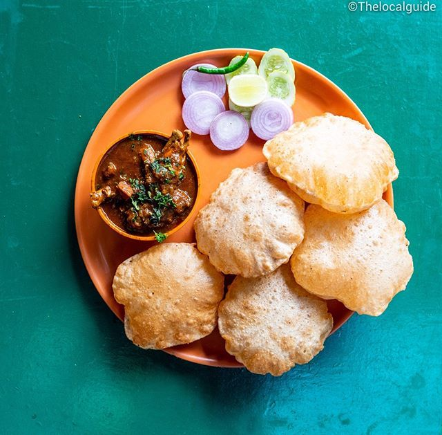

Poori
⭐⭐⭐⭐⭐ 4.9 Rating | ⏱ 35 Minutes | 🍽 4 Servings
Category
Breakfast
Difficulty
Easy
Calories
290 kcal
Cooking Style
Deep Fried
📋 Ingredients
- 2 Cups Wheat Flour
- ½ tsp Salt
- 1 tsp Oil or Ghee
- ¾ Cup Water (Approx.)
- Oil for Deep Frying
🍳 Required Utensils
- Mixing Bowl
- Rolling Pin
- Rolling Board
- Deep Frying Pan (Kadai)
- Slotted Spoon
- Kitchen Tissue
- Serving Plate
📖 Introduction
Poori is a traditional Indian deep-fried bread made from whole wheat flour. It is soft on the inside, crispy on the outside, and puffs beautifully when fried. Poori is commonly served with potato curry, chole, or vegetable kurma.
🔬 Principle
A firm wheat flour dough is rolled into small circles and deep-fried in hot oil. The moisture inside the dough turns into steam, causing the poori to puff up into a light and fluffy bread.
👨🍳 Procedure
- Take wheat flour in a large mixing bowl.
- Add salt and one teaspoon of oil.
- Mix well.
- Add water little by little to make a firm dough.
- Cover and rest the dough for 15 minutes.
- Divide the dough into equal-sized balls.
- Roll each ball into small circular discs.
- Heat oil in a deep frying pan.
- Carefully slide one poori into the hot oil.
- Press gently with a slotted spoon until it puffs.
- Flip and fry the other side until golden.
- Remove and drain excess oil on kitchen tissue.
- Repeat with the remaining dough.
- Serve hot.
⚠ Precautions
- Prepare a firm dough, not soft.
- Roll pooris evenly.
- Oil should be hot before frying.
- Do not overcrowd the frying pan.
- Handle hot oil carefully.
💡 Chef Tips
- Add a little semolina for crispier pooris.
- Do not use excess flour while rolling.
- Fry on medium-high heat.
- Serve immediately while hot.
- Best served with potato masala or chole.
🥗 Nutrition Facts
| Nutrient | Amount |
|---|---|
| Calories | 290 kcal |
| Protein | 6 g |
| Carbohydrates | 35 g |
| Fat | 14 g |
| Fiber | 4 g |
🍽 Serving Suggestions
- Serve with Potato Curry.
- Enjoy with Chole.
- Serve with Vegetable Kurma.
- Pair with Mango Pickle.
- Enjoy with Sweet Kesari Bath.
🌿 Health Benefits
- Wheat flour provides dietary fiber.
- Supplies carbohydrates for energy.
- Homemade pooris contain no preservatives.
- Can be paired with nutritious vegetable curries.
- Best enjoyed in moderation.
✅ Result
The prepared Poori should be soft, puffed, golden brown, and slightly crispy on the outside. It should have a light texture and taste delicious when served hot with potato curry, chole, or vegetable kurma.
🎥 Watch Recipe Video
Learn the complete recipe by watching the step-by-step video.
▶ Watch on YouTube